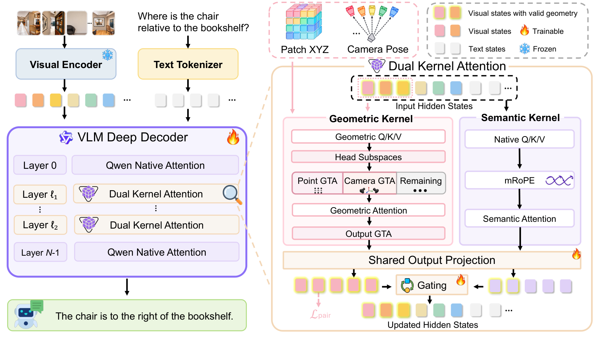

Paper Analysis
01 · Spatial Questions Need a Reference Frame
图像中的左右关系属于投影平面；空间问答往往要求相对另一个对象、相机或行动者描述方向。视角改变时，对象语义可以保持不变，而“左侧”可能改变。任务因此不只需要识别对象，还需要保存各观测之间的坐标关系。
DK-VLM 输入多帧 RGB 与文字问题，输出文本空间判断。视觉编码器产生视觉 token，冻结 VGGT-Omega 估计与它们对齐的三维点及相机位姿。模型没有输出更准确点云的训练目标，也没有持续更新的流式地图。
作者关注的接口问题是：将重建特征直接加到语言模型特征上，不一定能让预训练注意力学会三维关系。因此将几何当作注意力中的位置运算，保留原有语义表示另行处理。这个选择针对几何增强 VLM，不是所有语义几何融合问题的通用结论。
Paper Analysis
02 · Reading Figure 2 from Inputs to Answers

Han Su et al. · Original figure, unmodified · Copyright retained by the authors · Paper & Caption ↗
Figure 2 左侧是冻结视觉编码器与深层 VLM 解码器。只有五个选定层增加 dual-kernel attention；其余层保留原结构。右侧展开一个替换层：语义核使用原生 Q/K/V、mRoPE 和掩码，几何核使用从原生投影初始化的独立可训练 Q/K/V。
几何核只接收有可靠几何的视觉 token，文本与无效几何位置不参与该核。点坐标与相机位姿分别作用于每个 head 的不同通道子空间；输出经过变换与投影后，才和语义核结果门控融合。
这里“共享输出投影”指有效几何位置上的两个核共用新投影 φ_g，它从原投影复制初始化并独立训练。无效位置仍走原生语义投影。门控是逐层可学习标量 α_l=sigmoid(g_l)，初值 0.5，不是逐像素估计的几何置信度。
几何有效集合内使用跨输入帧的完整注意力。即使语义核保留因果掩码，整个架构也不能据此称为逐帧因果 streaming；它在给定多帧集合上回答问题。
Y_i = (1 − α_l) φ_g(S_i) + α_l φ_g(G_i), i ∈ J J: visual tokens with valid geometry S: semantic-kernel output; G: geometric-kernel output
Paper Analysis
03 · Why Transforming Q and K Encodes Relations
Geometric Transform Attention（GTA）用齐次变换 T_i 为 token i 指定坐标关系。设 P_i=T_i⁻¹，将 q_i 乘 P_i 的转置、k_i 和 v_i 乘 T_i；注意力聚合后再用 P_i 将结果变回查询坐标。
因此点积自然出现 T_i⁻¹T_j。它比较的是 j 相对于 i 的几何关系，而非单独输入一个绝对坐标 embedding。value 与输出也被变换，所以几何不仅改变“关注谁”，也改变被汇聚内容的坐标表达。下式只展示运算核心，省略常规缩放与 softmax。
Point GTA 使用来源视角的旋转与点坐标作为平移；Camera GTA 使用相对第一帧的相机变换。每个 128 通道 head 中 48 通道用于 point、24 用于 camera，剩余 56 通道保留未变换。四维齐次块允许旋转和平移共同进入线性运算。
教学解释：同一空间关系在不同世界原点下不应改变。相对变换使注意力有机会使用这种关系结构；但前端预测出错时，关系也会出错，变换本身不构成正确对应的保证。
q̂_i = T_i⁻ᵀ q_i; k̂_j = T_j k_j; v̂_j = T_j v_j q̂_iᵀ k̂_j = q_iᵀ (T_i⁻¹ T_j) k_j T_i(point) = [R_i, λ_b x_i; 0, 1] relative displacement = λ_b R_iᵀ(x_j − x_i)
Paper Analysis
04 · Aligning Geometry with Visual Tokens
附录将每个合并视觉 token 的图像区域中心映射到前端 dense pointmap，同时处理两条预处理链的 resize、crop 与 padding 差异。按视频内有限深度置信度的第 20 百分位过滤低置信点，再对保留邻点做重新归一化的双线性插值。
三维点与相机表达在第一相机坐标中；点集共同中心化并缩放，相机平移使用同一尺度。Point GTA 的 12 个四维块进一步采用 0.25–4.0 的不同位移尺度 λ_b。这样多尺度关系进入 head，而不是假定一个数值范围适合所有空间关系。
这一处理很重要：前端坐标与视觉 token 必须对应同一像素区域，且点与相机尺度一致。否则即使 attention 公式正确，也可能把错误位置关系注入模型。前端置信度过滤是输入筛选，不等于最终答案的置信度校准。
Paper Analysis
05 · Where the Pairwise Loss Is Attached
L_pair 接在倒数第二个几何注入层、门控融合之前的几何表示上，即经过 φ_g 的 G。对有序 token 对构造 [h_i,h_j,h_j−h_i,h_i⊙h_j]，用训练期预测头回归 log(1+距离) 与单位方向。距离用 Huber，方向用余弦损失，方向项权重 0.5。
每个样本最多采样 256 对，多帧输入目标约一半跨帧，按距离分层抽样。接近零距离的对仍进入距离损失，但从方向项中排除；没有有效 pair 的样本不进入有效样本平均。这些细节避免方向归一化及空集合导致异常。
总损失是答案 SFT 加 λ(t)L_pair，λ 在训练前 5% 逐渐升至 0.1。pair 头推理时移除。该损失直接约束几何核保留关系信息；SFT 再通过融合表示约束答案。目标距离和方向来自冻结前端的预测，不能写成真实测量监督，也不会反过来改善被冻结的前端。
这与语义监督 memory 的讨论有可比之处：loss 附着位置决定它约束哪个表示。只在当前输出监督一个头，与让损失通过历史写入路径回传，不是同一件事。DK-VLM 的 pair loss 没有监督长期 memory，本论文不能作为那条历史梯度路径的实验证据。
z_ij = [h_i, h_j, h_j − h_i, h_i ⊙ h_j] y_dist = log(1 + ||x_j − x_i||) L_pair = mean(Huber(distance) + 0.5 · cosine_loss(direction)) L = L_SFT + λ(t) L_pair
Paper Analysis
06 · Reference-Frame Composition and Training
结构注入不保证多步参照系更新正确。Reference-Frame Composition（RC）从经过核验的单步关系组成连续转向或视角变化，训练每一步角度、动作、航向增量与累计航向。累积航向按 h_k=(h_{k−1}+δ_k) mod 360° 更新，后一步必须继承前一步参考方向。
RC 使用 VSI590K、SPAR7M 来源标注形成约 1.6M 样本池，选择 150K 两步/三步样本训练，四步留作泛化测试。它主要核验已有角度标注的代数一致性，不是用真实三维传感器重新测量所有标签。结构化 JSON 输出由 SFT 学习，并非推理时额外调用机器人规划器。
模型在约 1.8M 原有指令混合数据上加入 RC，默认 32 帧、训练一个 epoch。冻结视觉编码器与几何前端，对语言 Q/K/V/O 使用 rank 64 LoRA，并训练几何核、门控与辅助头。8B 版本五个注入层为 6、12、18、27、33，pair loss 位于第 27 层。
8B 可训练参数约 338.22M，训练报告使用 32 张 H200 约 10 天。参数百分比小不等于整个方案训练便宜；推理还需要几何前端和多帧注意力。
Paper Analysis
07 · A Control That Preserves Extra Capacity
主表 DK-VLM-8B 在 VSI-Bench 为 74.33、ReVSI-32 为 58.28；GeoThinker-8B 为 72.60、54.16。这些是综合分数，不能概括为所有关系都更好：VSI 绝对距离子项 DK 为 60.48，GeoThinker 为 62.49。
更有解释力的是 Table 6：把 Point/Camera 变换设为恒等，但保留几何分支及其参数。这样可以区别“只是加了一个分支”和“关系变换本身有用”。全部移除关系后为 70.02，比完整模型低 4.31；移除 pair loss 则降低 1.13。
单独去掉 Point 或 Camera 仍有另一路几何信息，所以对应下降不能简单相加。该实验支持这个模型、数据和预算下的位置关系贡献，未证明所有场景中几何都比语义更重要。
| DK-VLM-8B variant | VSI-Bench ↑ |
|---|---|
| Full model | 74.33 |
| Without Point GTA | 71.81 |
| Without Camera GTA | 72.46 |
| Identity transforms; branch retained | 70.02 |
| Without pairwise loss | 73.20 |
Paper Analysis
08 · What RC Adds and Where Gains Stop
Table 7 的同数据对照中，Qwen3-VL SFT 加 RC 从 68.80 到 69.20；DK-VLM 加 RC 从 73.28 到 74.33。RC 在两个模型上均有增益，但对 DK 的提升更大。路线规划子项更明显：VSI 从无 RC 的 51.21 到 60.31，ReVSI 从 43.48 到 47.67。
独立 RC 测试区分 Progress 与 Chain：前者只累计首错前的连续正确步骤，后者要求整条链正确。四步 Chain 从无 RC 的 0 到 20.6，说明存在超出训练长度的迁移，但绝对完成率仍低。该四步集共 248 例，动作任务只有 8 例，因此不能宣传为所有长链导航能力已解决。
一般视频理解并非全面改善。与同数据 Qwen SFT 比较，VideoMME 从 64.59 到 66.22，但 MVBench 从 68.42 降至 67.93。帧数从 32 增至 128 时 VSI 从 74.33 到 75.32，收益趋缓，也没有给出固定内存流式性能结论。
Paper Analysis
09 · Implications for Semantic Guidance in Reconstruction
附录 A.12 在 10% 训练子集且不使用 pair loss 时，SFT 为 59.48、输入端 3D 位置特征融合 59.21、五层融合 59.74，而 dual-kernel 为 62.78。这组实验告诉我们融合接口需要认真控制，不宜仅凭“额外信息应该有用”判断设计。它没有比较语义写入 LingBot-Map，因此不能用于否定或证明我们的写入前融合。
更值得借鉴的是保留参数、只去除关系的对照。对语义 memory，可以设置等规模普通视觉分支、仅输出端语义、写入前语义，并在相同缓存预算下观察未来帧几何。辅助 loss 若只提升语义可读性，仍需几何任务证据说明这部分信息被实际使用。
模型的 dual-kernel 是作者为保持原生语义注意力而设计的接口，不必照搬到我们的重建架构。对当前方案，先确定语义进入共享历史形成的前向路径，再检查未来几何损失是否能到达该路径，更能隔离真正的问题。
官方仓库提供推理、评测和 RC 标注说明。本文依据论文解释训练与辅助监督，没有在本地复现训练或 benchmark；几何前端质量、算力和动态场景适用性仍应作为迁移前的具体条件核查。
Discussion
Reading Questions
Does DK-VLM reconstruct a better scene?
本文目标是空间问答。几何前端冻结，pair loss 的目标也是预测几何；没有证明点云或位姿得到改善。
Why is geometry more than an added feature here?
Q/K 的相对变换直接进入相似度，value 与输出也在相应坐标表达间转换。几何改变交互运算。
Is the learned gate a confidence estimate?
不是。它是每层的可训练标量，输入置信度主要用于有效几何筛选，没有逐对象校准的门控概率。
Can the model be called online because it retains a causal kernel?
不能。有效视觉 token 的几何核在给定帧集合内完整交互，不能把语义核的因果掩码推广到整个系统。
References
- Paper · Version 1 ↗
- Submission History ↗
- arXiv Distribution License ↗
- Official Project ↗
- Official Repository ↗
One original method figure is included for focused scholarly commentary. The arXiv record uses a non-exclusive distribution license, not a Creative Commons reuse license; copyright remains with the authors. No modifications.
Verified on 2026-10-20. Paper results refer to the linked versions. Repository references were checked on this date.